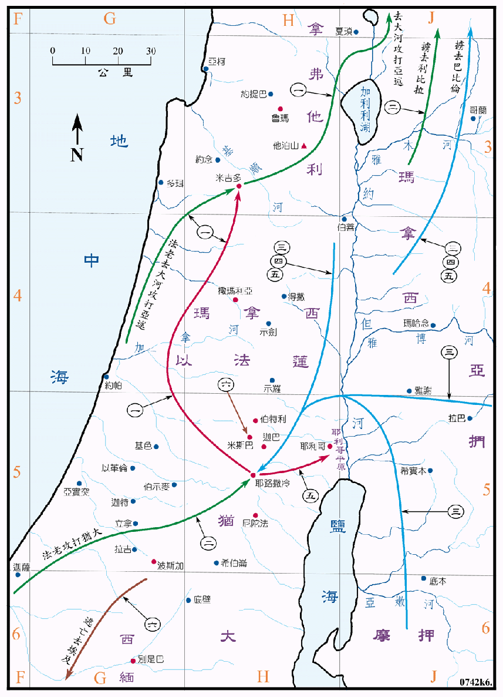

640～586BC

| 国 | 王 |
|---|---|
| 犹大国 | 约西亚 (犹大王十六 639～609BC) |
| 约哈斯 (犹大王十七 609BC) | |
| 约雅敬 (犹大王十八 609～597BC) | |
| 约雅斤 (犹大王十九 598BC) | |
| 西底家 (犹大王二十 598～587BC) | |
| 先知 | 那鸿 (664～612BC) |
| 西番雅 (639～608BC) | |
| 耶利米 (626～580BC) | |
| 哈巴谷 (605～587BC) | |
| 俄巴底亚 | |
| 但以理 (605～530BC) | |
| 以西结 (597～571BC) |
行动线说明
犹大王约西亚
| 序号 | 圣经 | 说明 |
|---|---|---|
| 王下22:1-23:27，代下34:1-35:19 | 约西亚登基作王卅一年，他行耶和华眼中看为正的事，十六岁时就寻求神，二十岁时洁净了犹大、耶路撒冷、玛拿西、以法莲、西缅、拿弗他利各城。廿六岁时修理圣殿，在殿中得到了摩西所传的律法书，把书念给众民听，令民守逾越节。 | |
| 一、 | 王下23:29-30，代下35:20-24 | 埃及王法老尼哥，上到伯拉河，攻击亚述。约西亚去抵挡他，埃及王在米吉多杀了他。他的次子约哈斯接续他作王。 |
犹大王约哈斯
| 序号 | 圣经 | 说明 |
|---|---|---|
| 二、 | 王下23:31-35，代下36:1-4 | 约哈斯登基作王三个月，他行耶和华眼中看为恶的事。法老尼哥将约哈斯锁在哈马地的利比拉，不许他在耶路撒冷作王，又罚犹大国金银再立他的哥哥以利亚敬作王，并改名为约雅敬。 |
犹大王约雅敬
| 序号 | 圣经 | 说明 |
|---|---|---|
| 王下23:34-37，代下36:5 | 埃及王法老尼哥立以利亚敬作王，又将他改名为约雅敬，作王十一年，他行耶和华眼中看为恶的事。 | |
| 三、 | 王下24:1-6，代下36:5-9 | 约雅敬年间巴比伦王尼布甲尼撒上到犹大，约雅敬服事他三年，然后背叛他。耶和华使迦勒底军、亚兰军、摩押军和亚扪人的军，来攻击约雅敬，要毁灭犹大。巴比伦王尼布甲尼撒上来攻击他，用铜链锁着他，将他带到巴比伦去，同时又将圣殿里的器皿掳到巴比伦去，放在他神的殿里。他儿子约雅斤接续他作王。 |
犹大王约雅斤
| 序号 | 圣经 | 说明 |
|---|---|---|
| 四、 | 王下24:8-17，代下36:9-10 | 约雅斤登基作王三个月，他行耶和华眼中看为恶的事，那时巴比伦王尼布甲尼撒围攻耶路撒冷，约雅斤出城投降，巴比伦王将殿中和王宫中的宝物都拿去，又除了国中极贫穷的人外，都掳去巴比伦。巴比伦王立他的叔叔西底家作王。 |
| 王下25:27 | 约雅斤被掳后卅七年，巴比伦王以未米罗达元年方放他出监，住在巴比伦直到去世。 |
犹大王西底家
| 序号 | 圣经 | 说明 |
|---|---|---|
| 五、 | 王下24:18-25:17，代下36:9 | 西底家登基作王十一年，他行耶和华眼中看为恶的事，第九年他背叛巴比伦，尼布甲尼撒率领全军来攻击耶路撒冷，到十一年城被攻破，王在耶利哥平原被迦勒底的军队追上，被带到利比拉巴比伦王那里受审，在他面前杀了他的众子，并剜了他的眼睛，带他去巴比伦。巴比伦王又拆毁耶路撒冷的城墙，焚烧耶路撒冷的房屋，把人民掳去巴比伦。南国犹大从此灭亡。 |
| 六、 | 王下25:22-26 | 巴比伦王立基大利作犹大的省长，以实玛利杀了他，就逃去埃及。 |
约西亚王寻求神，登基十二年即开始成功彻底的革新了长久以来腐蚀了的宗教，使犹大重获平静和富强。当时的先知特多，是促成宗教改革的幕后功臣。
亚述此时已渐衰微，巴比伦和埃及渐兴起，犹大常受埃及之攻击。巴比伦於 612BC 攻陷亚述的首都尼尼微大城，亚述的残兵撤退到哈兰，被巴比伦围困得岌岌可危，埃及的法老尼哥为着争取霸权，取道非利士地北上助亚述攻打巴比伦。约西亚去抵挡他，但在米吉多被杀身亡。不久，埃及法老尼哥又把犹大王约哈斯掳到利比拉囚禁，立约雅敬作犹大王。609BC 亚述完全被巴比伦所灭。605BC 巴比伦在迦基米设大败埃及，从此巴比伦成为世界的新霸主，取得了亚述原有的领土，他虽然未立刻和长期的占领犹大国，但在往后的二十年中，视犹大王为其傀儡，并且经常前攻打耶路撒冷，数度大量将人民和财物掳掠去巴比伦。犹大第一次被掳是在 605BC 约雅敬年间。第二次是在 579BC 约雅斤年间，第三次是 586BC 希底家年间。那时耶路撒冷和圣殿均被毁。犹大国从此灭亡。巴比伦王将犹大划为一省，立犹大人基大利作犹大的省长。